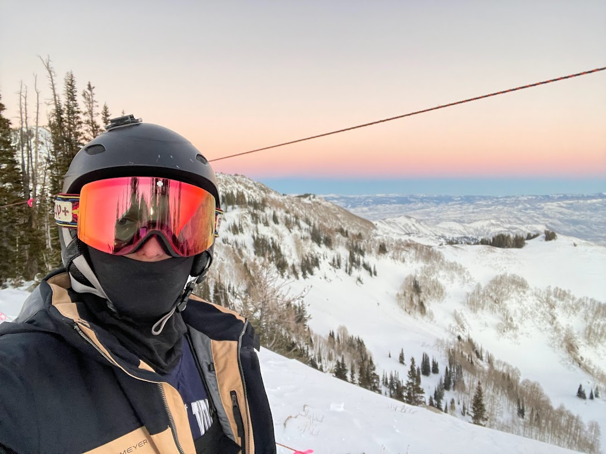
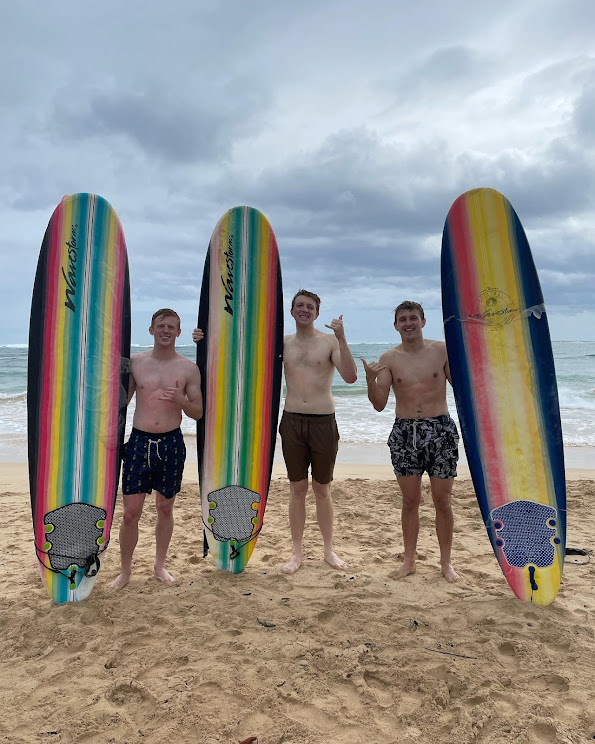
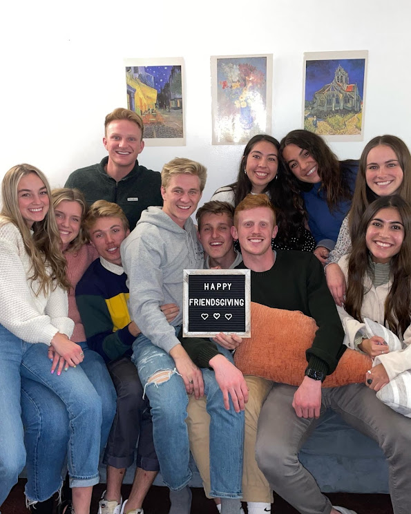
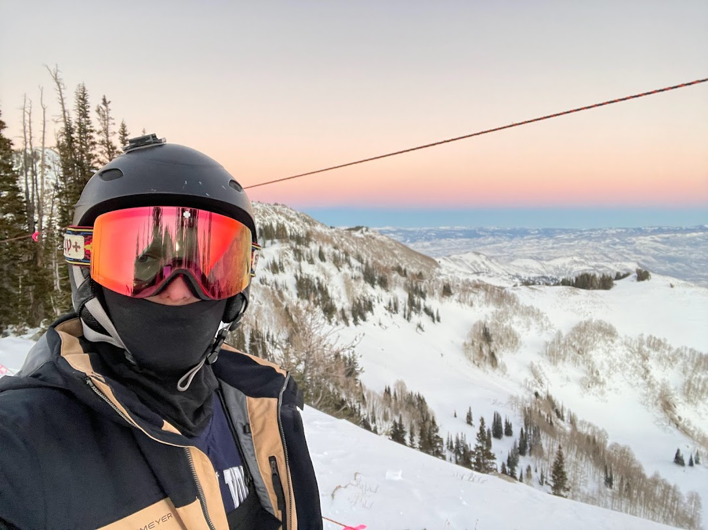
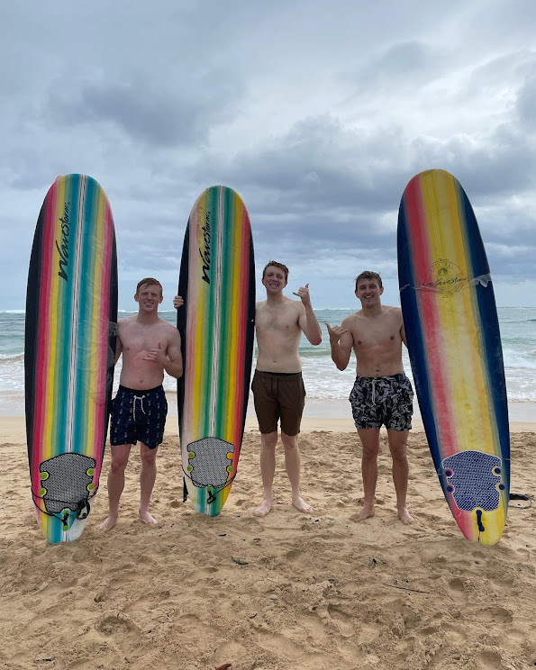
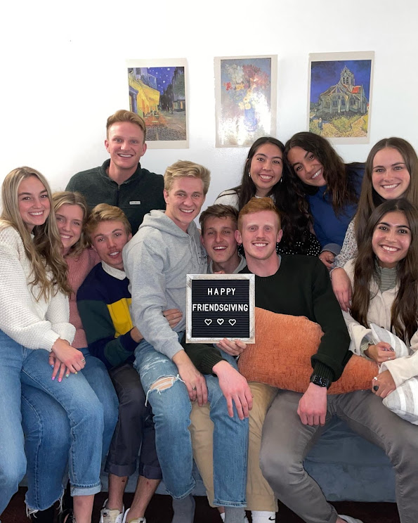

EDUCATION
- Brigham Young University
- Pre-Business Major
- GPA: 3.9
- Acedemic Scholarship
- Waukee Highschool
- GPA: 3.85
- Volunteer Missionary
- Spent 24 months serving the Spanish speaking population of Richmond, VA as a volunteer missionary and became fluent in the Spanish language
- Held leadership positions that included the responsibilities of leading, training, counseling and resolving conflict with fellow missionaries and other leaders to further missionary efforts
- Brazilian Meat Server
- Served a variety of high quality Brazilian meats in a fast paced environment
- Communicated with chefs and customers to ensure customer satisfaction
- Recognized as one of the top servers for quality consumer experience
- Spanish Fluency Level: C1 (Effective Operational Proficiency or Advanced)
- Proficient in: Visual Basics, Tableau, Data analysis, SQL.
- BYU Academic Scholarship
INTRESTS

 

 